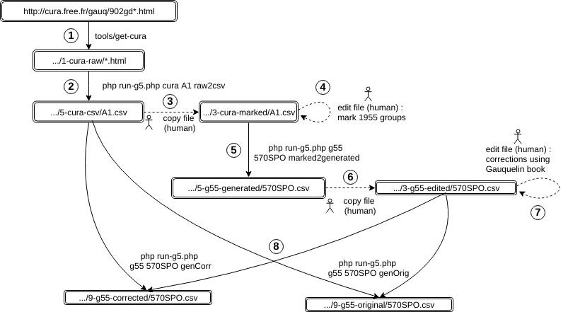
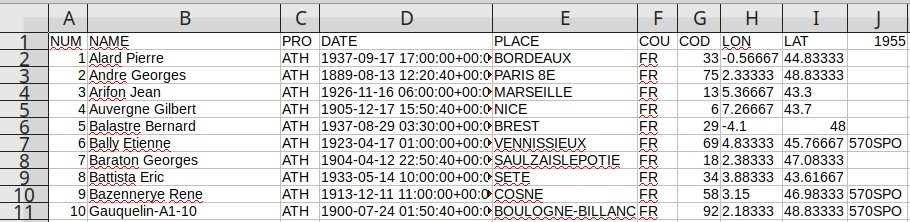

Restoration process
Restoration of the group "570 sportifs" (570SPO) is used to illustrate the process.  Note : the directory names used in this page relate to the corresponding entries ofconfig.yml.
For example, the default value of
1-cura-raw directory is data/1-raw/cura.free.fr/
See documentation on configuration.
-
Store cura.free.fr data on a local machine. By human or program.
See page about Cura.
Raw files are in1-cura-rawdirectory. -
Extract data from html pages to generate csv files. By program.
This step also applies corrections.
See page about corrections done to files of serie A.
Generated csv files are in5-cura-csv/directory.These two steps correspond to the generation of A1, see page about Cura A.php run-g5.php ertel sport raw2csv php run-g5.php cura A1 all
-
Copy the generated file to a directory dedicated to human modifications. By human.
Files are copied from5-cura-csv/to3-cura-marked/. -
Associate cura data to Gauquelin 1955 original groups. By human.
The files of3-cura-marked/are modified :- A new column "
1955" is created. - This column is filled with Gauquelin 1955 group codes, (the list is in class
src/g5/commands/g55/G55.php).
Edition looks like that :  - A new column "
-
Generate one file per original 1955 group. By program.
php run-g5.php g55 570SPO marked2generated
This extracts the rows marked with "570SPO" from3-cura-marked/A1.csvto generate5-g55-generated/570SPO.csv -
Copy these files to directory
3-g55-edited/By human.
Files of5-g55-generated/must then be copied to3-g55-edited/, a directory dedicated to human modifications. -
Edit the files located in
3-g55-edited/(by human).
This is the long part of the work : note the differences between Gauquelin 1955 book and cura data.
Once a file has been copied to3-g55-edited/, columns where the corrections will be written are manually added.
These column are named with a postfix_55.- GIVEN_55 : Given name
- FAMILY_55 : Family name
- HOUR_55 : Hour HH:MM
- DAY_55 : Day YYYY-MM-DD
- PLACE_55 : Name of place (Exact spelling of geonames.org)
- C2_55 : COD in cura vocabulary = ADM2 in geonames = département for France
- CY_55 : ISO 3166 country code
- OCCU_55 : Occupation code
- NOTES_55 : Free notes
This step is easier when two persons work together : one reads the book, the other writes the corrections
In step 5, the program added a columnORIGIN, filled with the code of cura file (for570SPO.csv, this column is filled with valueA1).
Some records are present in Gauquelin book and not in cura file ; in this case, the fieldORIGINis notedG55. -
Generate downloadable files (by program)
Only 570SPO for the moment.
There are two versions of each 1955 group, an original and a corrected version.-
Original groupsOriginal groups are meant to reproduce as exactly as possible the historical version of the groups.
They are built using data from3-g55-edited/and5-cura-csv/.
For a given field, if a value in corresponding*_55column exists in a3-g55-edited/file, it is retained. Otherwise, the value is taken from5-cura-csv/.
The generation is done with the commandphp run-g5.php g55 570SPO genOrig
It produces a file in a directory specified by9-g55-original/inconfig.yml. -
Corrected groupsCorrected groups are meant to integrate all the corrections on the data.
Build process is the same as for original groups, but the*_G55fields of3-g55-edited/are not used, except for records present only in Gauquelin book and not in Cura files (fieldORIG= g55 in3-g55-edited/) are also added.
The generation is done with the commandphp run-g5.php g55 570SPO genCorr
It produces a file in a directory specified by9-g55-correctedinconfig.yml.
-
-
Check dataNot represented in the diagram. Concerns files of
9-g55-original/
To check that the original file corresponds to the informations written in the book.
Involves 2 persons ; one reads the book, the other checks that the file contains the same values.
The check is done on fields birthdate, day and hour.
Done only for9-g55-original/570SPO.csv
Execution
From file A1
Stepmarked2generated permit to see that A files do not contain all records.
php run-g5.php g55 570SPO marked2generated Generating data/5-tmp/g55-generated/570SPO.csv - 564 persons stored
From file A2
php run-g5.php g55 508MED marked2generated Generating data/5-tmp/g55-generated/508MED.csv - 505 persons stored
php run-g5.php g55 576MED marked2generated Generating data/5-tmp/g55-generated/576MED.csv - 570 persons stored
php run-g5.php g55 349SCI marked2generated Generating data/5-tmp/g55-generated/349SCI.csv - 277 persons stored